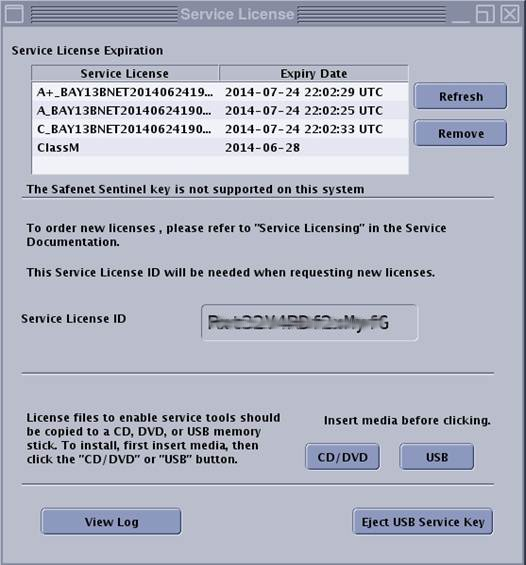

- 00000018WIA30DE4E20GYZ
- id_131061812.4
- May 2, 2023 2:02:31 PM
Service Licensing
Overview
Secure Service Access (SSA) is a secure service key platform for GE medical devices developed to improve the service license renewal and replacement processes. The SSA license is a softkey (software file) for GE service tools and information. This license is assigned to one specific system and can be downloaded by GE customers or service providers.
Multiple service license levels are available to manage access to different features, tools, and service methods. Contact your local GE service or sales representative for more information. It is very important to install the service licenses for the system to gain access to the appropriate service tools.
If no license is found when attempting to run a service feature or tool, or if the license has expired then contact your sales or service person for information on available service license packages.
(For DV25.1 and later only) The MR Service Software DVD, which shipped together with the system, is license controlled. The same licensing scheme applies to the installation of the DVD onto the system (either hardkey or softkey must be present).
Sites must generate and install a service license for the following reasons:
-
New system Installation
-
Software upgrade
-
GOC component hardware replacement
-
System date or time change
-
System language change
Access Service License ID (16-Digit Code)
The system language must be decided before getting the service license ID. If the language is changed on the system, it will also change the 16-digit Service License ID assigned to the system and cause the existing license to fail.
To request a service license, you need the unique 16-digit code, called a Service License ID, that is assigned to the system. This ID is needed to configure and activate a service license softkey. It is a unique ID, meaning each system has a different code.
To access the Service License ID, go to the operator console, click the drop-down arrow on the Tools icon, and select Install Service License. The Service License information window displays, containing the Service License ID.
The numerical character for zero is a circle with a dot in the center (⊙). Be careful when recording your service license ID because zeros can be mistaken for the letter O, and vice versa. The uppercase letter O and the lowercase letter o do not have a dot in the middle.

This example displays each level of service class license. Only the service license level available for a given system will display in that system’s window.
Order Service License Softkey (Systems Not Under GE Service Contract)
To request a service license softkey, the customer must contact the local GE service center by telephone. The telephone number can be found on the system tag. The local service center collects the site information and forwards the request to the regional representative for approval.
When calling, the customer must have the following information ready:
-
Customer name and location
-
System identification number
-
Service License ID
-
Email address where the softkey should be sent
After the request is submitted, the license is typically approved by the regional representative within three business days. Load the license softkey on the system as described below.
The service license softkey expires in one year from the date created. The GE field engineer is not responsible for customer service license renewal after warranty.
Load Service License Softkey
-
After the request is approved, an email is sent to the email address provided with the request. Use the email link to download the license softkey.
-
Verify that the system time is set correctly before loading the license.
-
To transfer the software license file to the system, save the license on either a USB stick or DVD.
Multiple license softkey types can be saved to the same USB stick or DVD for multiple systems.
-
To access the Service License ID, go to the operator console, click the drop-down arrow on the Tools icon, and select Install Service License.
-
Insert the USB stick or DVD where you saved the license softkey, and select CD/DVD or USB.
The system will automatically load the correct license softkey for a given system ID.
-
Select the language for the system.
The system language must be decided before getting the service license ID. If the language is changed on the system, it will also change the 16-digit Service License ID assigned to the system and cause the existing license to fail.
-
When the installation is finished, eject the USB key correctly (using the Eject button) so it does not become corrupted.
If a softkey has unexpectedly stopped working, check the time and date on the system. If the date or time has been changed, this causes the softkey to stop working. Change the date and time back to the previous setting to correct the issue.
FAQ and Potential Issues
- The 16-digit code will change with the language of the system.
-
Before installing any SSA soft license key, confirm that the system is set to the final language configuration that will be used at the site.
- Date/time tampering
-
The SSA key will become invalid if the system clock is changed in an attempt to try to extend the life of an SSA license. Any attempt to backdate the system date/time will lock the system (the SSA license will be invalidated). To recover, perform a full software load. A time change tolerance limit of 45 minutes for OLE license is applicable if NTP is not configured on the system, and the system time is in the past. Standard and Daylight Saving changes are not affected.
- SSA licensing uses GMT UTC standard time.
-
License expiration time corresponds to UTC time, not the local time.